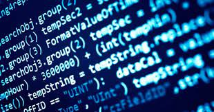

La programación de software es una actividad que está ligada a los procesos con los cuales se ejecutan
tareas y programas en un dispositivo electrónico como las computadoras y celulares.
El Papel del Programador
El programador escribe líneas de texto o "código" que se distribuyen en diferentes archivos dentro de una carpeta,
siguiendo las reglas que le define un lenguaje de programación y que, finalmente, se ejecutan para cumplir una o múltiples funciones.
Existen diversos lenguajes de programación: cada uno define un conjunto de reglas y cada uno tiene un propósito en específico, así que,
dependiendo del proyecto o tarea que el programador deba ejecutar, se utilizará un lenguaje en específico.
Un programador sigue las reglas de un lenguaje para comunicarse con la computadora y así definir las instrucciones a seguir para construir un programa o software.
Tipos de Programación
Lenguajes de programación procedimental:Los lenguajes de programación imperativos son aquellos que se basan en una estructura secuencial y
jerárquica, y que ejecutan acciones de acuerdo con reglas precisas. Deben su nombre a que son lenguajes que indican a los ordenadores qué tienen que hacer y cómo
deben hacerlo.
Lenguajes de programación orientada a objetos:Los lenguajes de programación orientada a objetos pertenecen a los lenguajes imperativos, pues se
basan en la presentación de instrucciones claras y organizadas estructuralmente para la ejecución de una tarea. Se distinguen de los procedimentales porque recurren
a la existencia de objetos que serán necesarios para ejecutar el programa, por lo que son más complejos y requieren información adicional.
Lenguajes de programación funcional:En contraposición a los lenguajes de programación imperativa, los lenguajes declarativos no requieren indicar al
ordenador cómo debe llevar a cabo una tarea paso por paso. Por el contrario, solamente dan instrucciones generales sobre qué resultados se esperan del sistema. Para que este
pueda cumplir con las tareas asignadas se emplean principios matemáticos.
Lenguajes de programación lógica:Los lenguajes de programación lógica son considerados lenguajes declarativos porque, así como los funcionales, no requieren
especificar paso a paso una estructura ordenada de instrucciones al ordenador para obtener un resultado. Por el contrario, únicamente precisan de la aplicación de principios
lógicos para cumplir con su función.
¿Qué Habilidades desarollas con la Programación?
Algunas de las aptitudes o habilidades que se desarrollan durante esta actividad son:
Pensamiento lógico.
Aptitud matemática.
Atención al detalle.
Desarrollo de nuevas tecnologías.
Aprendizaje de diferentes lenguajes de programación.
Análisis de problemas.
Gestión del tiempo.
Conceptos basicos para programar
Algoritmo
Llamamos algoritmos al conjunto de instrucciones sistemáticas y previamente definidas que se utilizan para
realizar una determinada tarea. Estas instrucciones están ordenadas y acotadas a manera de pasos a seguir
para alcanzar un objetivo.
Todo algoritmo tiene una entrada, conocida como inputy una salida, conocida como output,y entre medias,
están las instrucciones o secuencia de pasos a seguir. Estos pasos deben estar ordenados y, sobre todo,
deben ser una serie finita de operaciones que permitan conseguir una determinada solución.
En el mundo de la programación, todo programa o sistema operativo funciona a través de algoritmos,
escritos en un lenguaje de programación que el ordenador pueda entender para ejecutar los pasos o
instrucciones de una forma automatizada. A nivel debig data e inteligencia artificial, los algoritmos
analizan la información y datos de consumidores y usuarios finales.
Tipos de Algritmos
Según su sistema de signos, es decir, cómo se describen los pasos a seguir, los algoritmos puede ser:
Cuantitativos y cualitativos: si funcionan a través de cálculos matemáticos o secuencias lógicas.
Computacionales o no computacionales: si requieren o no del uso de un ordenador para la solución
o ejecución de una determinada tarea.
Según su función y estrategia, es decir, qué hacen y cómo lo hacen, existen cinco tipos de algoritmos: Algoritmos de búsqueda: aquellos que encuentran uno o varios elementos que presenten un conjunto de
propiedades dentro de una determinada estructura de datos. Las búsquedas pueden ser:
Secuenciales: comparan el elemento a buscar con cada elemento del conjunto, hasta encontrarlo.
Binarias: comparan el elemento de búsqueda con un elemento ubicado en el medio de una serie
ordenada para determinar si son iguales.

DATOS
En programación, un tipo de dato es la clasificación de un dato según sus características. Puede tratarse de
una cadena, de un texto, de números, etc., y un valor es cualquier clase de dato que se halle dentro de un tipo de dato.
Tipos de Datos
numéricas: que almacenan números enteros.
de caracteres: que representan símbolos o caracteres.
de cadena de caracteres:que contienen palabras y textos.
lógicas o booleanas:que sirven para almacenar valores lógicos (verdadero o falso).
PSeInt es una herramienta para asistir a un estudiante en sus primeros pasos en programación. Mediante un simple
e intuitivo pseudolenguaje en español (complementado con un editor de diagramas de flujo), le permite centrar su
atención en los conceptos fundamentales de la algoritmia computacional, minimizando las dificultades propias de un
lenguaje y proporcionando un entorno de trabajo con numerosas ayudas y recursos didácticos.
¿Para que sirve Pseint?
PSeInt está pensado para asistir a los estudiantes que se inician en la construcción de programas o algoritmos
computacionales. El pseudocódigo se suele utilizar como primer contacto para introducir conceptos básicos como el
uso de estructuras de control, expresiones, variables, etc, sin tener que lidiar con las particularidades de la sintaxis
de un lenguaje real. Este software pretende facilitarle al principiante la tarea de escribir algoritmos en este pseudolenguaje
presentando un conjunto de ayudas y asistencias, y brindarle ademas algunas herramientas adicionales que le ayuden a encontrar
errores y comprender la lógica de los algoritmos.
Un diagrama de flujo es un diagrama que describe un proceso, sistema o algoritmo informático. Se usan ampliamente en numerosos
campos para documentar, estudiar, planificar, mejorar y comunicar procesos que suelen ser complejos en diagramas claros y fáciles
de comprender. Los diagramas de flujo emplean rectángulos, óvalos, diamantes y otras numerosas figuras para definir el tipo de paso,
junto con flechas conectoras que establecen el flujo y la secuencia. Pueden variar desde diagramas simples y dibujados a mano hasta
diagramas exhaustivos creados por computadora que describen múltiples pasos y rutas.
Simbologia de los diagramas de flujo
Video explicativo sobre como hacer un diagrama de flujo
Según Statista, se prevé que los ingresos del mercado de servicios de TI en España supere los 22.000 millones de euros en 2024.
Sabemos que estudiar todos los lenguajes de programación es virtualmente imposible, sobre todo teniendo en cuenta que existen cientos
de ellos. Abrumador, ¿verdad?
Por eso, en este artículo recopilamos una lista con los lenguajes de programación más demandados en el sector a día de hoy, actualizada
con los datos de DevJobsScanner, un índice que analiza cuántos empleos se han creado cada mes con alguno de los siguientes lenguajes de programación
como requisito.
JAVASCRIPT
este lenguaje de programación es usado por el 98% de las webs de todo el mundo, ¡wow! En los últimos meses, las ofertas de empleo que requieren explícitamente
JavaScript a sus candidatos se han incrementado más de un 30%.
Junto a HTML y CSS, JavaScript es uno de los pilares esenciales de internet tal y como lo conocemos. Originalmente, era utilizado exclusivamente en navegadores,
pero en la actualidad se ha integrado como parte fundamental de algunos servidores y una gran variedad de aplicaciones.
En la gráfica se muestra la evolución de las vacantes que solicitan JavaScript, durante los 17 meses explorados, y podemos ver su constante demanda a lo largo del
tiempo. El 2023 empezó con más de 120.000 vacantes abiertas en tecnología, ¡y la demanda por este lenguaje de programación persiste!
está presente en servicios tan populares como Spotify, Instagram y Netflix. Este lenguaje tiene como característica su enfoque multiparadigma y una alta legibilidad
de su código, lo que lo ha convertido en uno de los lenguajes más populares en todo el planeta.
este lenguaje de programación está presente en multitud de dispositivos y sistemas, como teléfonos móviles, ordenadores, centros de datos, consolas de videojuegos
y diversas aplicaciones basadas en la comunicación cliente-servidor en la web.
suele ser utilizado para el desarrollo de aplicaciones móviles y software simple, mientras que C++ se aplica para desarrollos más complejos y de gran escala. C# es un
lenguaje más simple frente a C++, pero no por eso es menos relevante. La complejidad del C++ hace que sea considerado más difícil de dominar que C#.
Su uso general está enfocado al desarrollo web y está orientado a la creación de aplicaciones web dinámicas que necesitan acceder a información almacenada en una base
de datos. Su nombre original hacía referencia, en inglés, a Personal Home Page, aunque actualmente hace referencia a Hypertext Preprocessor.
Tanto C como C++ son lenguajes de programación de propósito general, lo que significa que ambos pueden usarse para alcanzar objetivos similares: conectarse a una base de datos,
realizar cálculos matemáticos o simplemente conectar dos dispositivos entre sí.
Son parecidos en muchos aspectos, siendo una de sus principales diferencias el nivel de abstracción con el que cuenta C++, mayor que el de su lenguaje hermano. C++ es un lenguaje
orientado a objetos que proporciona a los profesionales del desarrollo acceso a características más avanzadas que C, aunque este último es más simple y rápido.
es un paradigma de programación, es decir, un modelo o un estilo de programación que nos da unas guías sobre cómo trabajar con él. Se basa en el concepto de clases y objetos.
Este tipo de programación se utiliza para estructurar un programa de software en piezas simples y reutilizables de planos de código (clases) para crear instancias individuales
de objetos.
Con el paradigma de Programación Orientado a Objetos lo que buscamos es dejar de centrarnos en la lógica pura de los programas, para empezar a pensar en objetos, lo que
constituye la base de este paradigma. Esto nos ayuda muchísimo en sistemas grandes, ya que en vez de pensar en funciones, pensamos en las relaciones o interacciones de los
diferentes componentes del sistema.
Un programador diseña un programa de software organizando piezas de información y comportamientos relacionados en una plantilla llamada clase. Luego, se crean objetos individuales
a partir de la plantilla de clase. Todo el programa de software se ejecuta haciendo que varios objetos interactúen entre sí para crear un programa más grande.
Claves de la programación orientada a objetos
La POO se inspira en la forma en que percibimos y entendemos el mundo que nos rodea. Imagina que estás construyendo un sistema de gestión de una biblioteca. En lugar de pensar en términos de
algoritmos y estructuras de datos, la POO te invita a considerar las entidades que existen en el contexto de la biblioteca, como libros, bibliotecarios y usuarios.
En este enfoque, cada una de estas entidades se convierte en un objeto, con propiedades (datos) y comportamientos (funcionalidades). Por ejemplo, un objeto «Libro» puede tener
atributos como el título, el autor y el año de publicación, así como métodos para obtener información sobre el libro, prestarlo o devolverlo a la biblioteca.
Clases,Objetos e instancias
es una plantilla. Define de manera genérica cómo van a ser los objetos de un determinado tipo. Por ejemplo, una clase para representar a animales puede llamarse ‘animal’ y tener una serie de atributos,
como ‘nombre’ o ‘edad’ (que normalmente son propiedades), y una serie con los comportamientos que estos pueden tener, como caminar o comer, y que a su vez se implementan como métodos de la clase (funciones).
un ejemplo sencillo de un objeto, como decíamos antes, podría ser un animal. Un animal tiene una edad, por lo que creamos un nuevo atributo de ‘edad’ y, además, puede envejecer, por lo que definimos un nuevo
método. Datos y lógica. Esto es lo que se define en muchos programas como la definición de una clase, que es la definición global y genérica de muchos objetos.
Principios de la POO
La encapsulación
La encapsulación contiene toda la información importante de un objeto dentro del mismo y solo expone la información seleccionada al mundo exterior.
Esta propiedad permite asegurar que la información de un objeto esté oculta para el mundo exterior, agrupando en una Clase las características o atributos que cuentan con un acceso privado, y los
comportamientos o métodos que presentan un acceso público.
La abstracción
La abstracción es cuando el usuario interactúa solo con los atributos y métodos seleccionados de un objeto, utilizando herramientas simplificadas de alto nivel para acceder a un objeto complejo.
En la programación orientada a objetos, los programas suelen ser muy grandes y los objetos se comunican mucho entre sí. El concepto de abstracción facilita el mantenimiento de
un código de gran tamaño, donde a lo largo del tiempo pueden surgir diferentes cambios.
Así, la abstracción se basa en usar cosas simples para representar la complejidad. Los objetos y las clases representan código subyacente, ocultando los detalles complejos al
usuario. Por consiguiente, supone una extensión de la encapsulación. Siguiendo con el ejemplo del coche, no es necesario que conozcas todos los detalles de cómo funciona el
motor para poder conducirlo.
La herencia
La herencia define relaciones jerárquicas entre clases, de forma que atributos y métodos comunes puedan ser reutilizados. Las clases principales extienden atributos y comportamientos
a las clases secundarias. A través de la definición en una clase de los atributos y comportamientos básicos, se pueden crear clases secundarias, ampliando así la funcionalidad de la clase principal y agregando atributos y comportamientos adicionales.
Polimorfismo
El polimorfismo consiste en diseñar objetos para compartir comportamientos, lo que nos permite procesar objetos de diferentes maneras. Es la capacidad de presentar la misma interfaz para diferentes formas subyacentes o tipos de datos. Al utilizar la
herencia, los objetos pueden anular los comportamientos principales compartidos, con comportamientos secundarios específicos. El polimorfismo permite que el mismo método ejecute diferentes comportamientos de dos formas: anulación de método y sobrecarga de método.
La POO en diferentes lenguajes
JAVA
Define clases utilizando la palabra clave «class» y especifica atributos y métodos dentro de ellas.
Utiliza la herencia con la palabra clave «extends» para crear subclases que hereden características de una clase base.
Aprovecha las interfaces para definir contratos que las clases deben implementar.
Aprovecha el polimorfismo para tratar objetos de diferentes clases de manera uniforme, utilizando métodos con la misma firma en diferentes clases.
Utiliza la encapsulación para ocultar los detalles internos de los objetos y proporcionar una interfaz pública para interactuar con ellos.
El Visual Basic ha sido desarrollado con el objetivo de entregar a los usuarios de programación informática un paquete de utilidades simples y accesibles.
Es por esto que el Visual Basic puede ser usado y fácilmente comprendido por expertos como también por usuarios principiantes. Su base parte del dialecto BASIC
pero con componentes novedosos que lo adaptan a los lenguajes informáticos modernos. A esto se suma que el Visual Basic es además un lenguaje de programación guiado
por eventos que permite mayor operatibilidad y mejores resultados.
¿Qué Carreras universitarias estan vinculadas a la Programación?
ya sabemos que la programación es de esas carreras en las que puedes conseguir un buen trabajo sin un título universitario, porque el avance de la tecnología es tan
veloz que las empresas no pueden esperar 5 años a que termines la carrera.
Pero esto no significa que no vayas a la universidad, ya que es un excelente lugar para formarte y convertirte en profesional. Pero la pregunta es:
¿qué carrera debes elegir si quieres ser programador? ¿Ingeniería de sistemas?, ¿ingeniería informática?, ¿ciencias de la computación? ¿Cuántas carreras existen?
Esta es una de las dudas más comunes y seguro te ha pasado. Pero tranquilo, en este blog te responderé todas esas dudas
Ingeniería en sistema
Un ingeniero de sistemas se encarga de los sistemas.Obvio, pero, ¿qué es un sistema? Un sistema es un conjunto de elementos que trabajan en conjunto de forma organizada
para obtener un resultado específico. Desde ese punto de vista, un equipo de fútbol es un sistema. Una startup (o una gran empresa) es un sistema. Una familia es un sistema.
Sí, los sistemas no se limitan al software o hardware. Nuestro ecosistema es un sistema, de hecho lo tiene en su nombre.Yendo a la tecnología, tenemos Sistemas Operativos
(Windows, Linux, Mac, Android, iOS, etc.), sistemas de bases de datos, sistemas de redes de computadoras, sistemas de servidores, sistemas de gestión y recuperación de
información, sistemas de seguridad y control de riesgos, entre otros.Ya sé qué estás pensando: que un software también es un sistema. Por supuesto. Entonces en esta
carrera sí verás programación, pero como te darás cuenta, no es el foco principal. Además de cursos de programación, tendrás cursos de gestión de proyectos, ingeniería
de requerimientos, sistemas de información y gerencia, entre otros.
Ingeniería en software
a ingeniería de software, que como su nombre lo dice, se encarga de del desarrollo, pruebas y mantenimiento del software. Mientras que la ingeniería de sistemas,
ve todos los sistemas informáticos en general, y las ciencias de la computación, se encargan específicamente de los sistemas de cómputo (tanto hardware, software y
modelos matemáticos), la ingeniería de software se especializa en eso: el desarrollo de aplicaciones. Aplicaciones web, móviles, de escritorio, videojuegos y más.
Esta es la carrera que debes elegir para formarte como programador, porque su enfoque es exclusivamente el desarrollo de software. Aunque, si nos ponemos estrictos,
un ingeniero de software es un perfil más amplio que el de un programador.